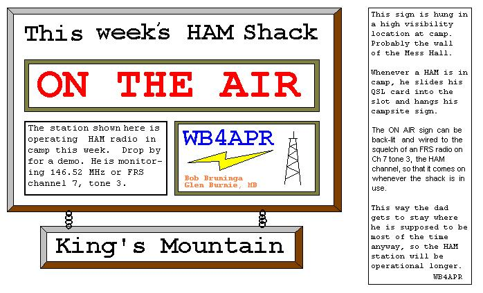
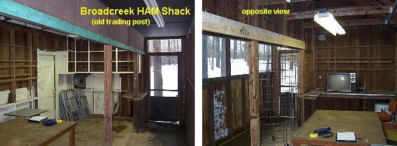
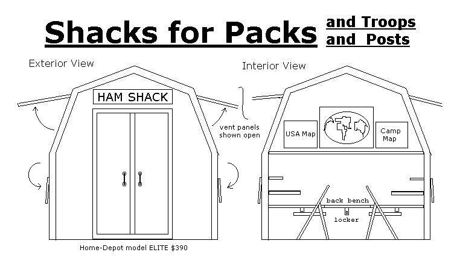
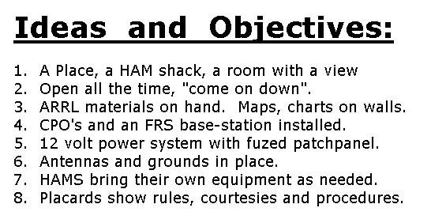
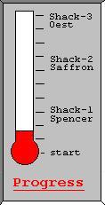
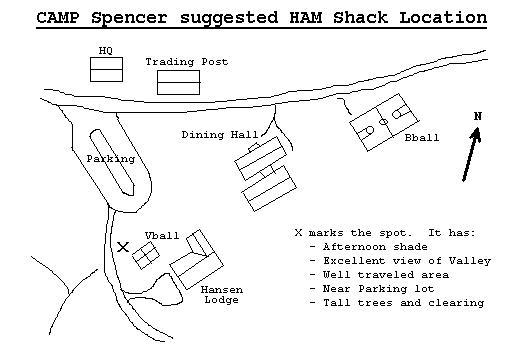
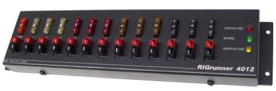
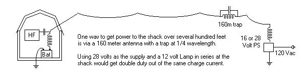
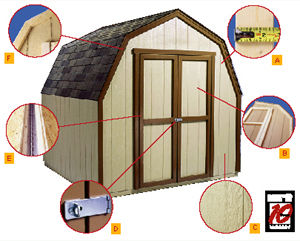
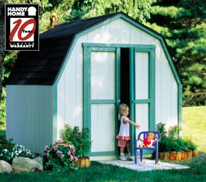

Actually, since many visiting dad's are fulfilliing a quota of having to be in his troops campsite anyway, there is a compelling reason to just operate from your given campsite but have a big sign posted at the mess hall showing where the HAM shack is this week.

Stations can leave their antennas in the trees and leave a coax for the next guy to use. But otherwise it will be up and out of the way. To facilitate coordinating activities from week-to-week, the web can be used to build a schedule of everyone that will be in camp this summer and if their are any weeks without a HAM, then local clubs can be solicited to help. Click here for example Schedule!
Also in May, 2006 a new Scout Camps Calling Plan (SCCP) was developed to also help scouts find each other on the air!
We can use this page to keep everyone informed of news in this regard. In the mean time, here is a LIVE APRS map display that shows the current HAM Radio APRS activity in and around the Maryland Broadcreek Scout Reservation and National Jamboree sites. Select the appropriate APRSdos map at the bottom window to see the details of the camp. If you are new to APRS, then these links may belp you get up to speed: APRS. .
This is live on-air APRS activity in the MD, NJ, PA area surrounding Broad Creek. ZOOM in or select a detail camp map if you see activity at or near camp.
| zooms up/down (you may also use PGup/dn) | |
| List stations, Show Status or Messages to Java console | |
| Centers or Zooms map on clicked location | |
| scrolls map |

This page originally had two ideas to facilitate demonstrations of HAM radio
at any camp:
SHACKS for PACKS (Troops&Posts) is an unapproved idea of some hams in Central Maryland and Southern PA to try to facilitate HAM radio activity at the Broadcreek Scout Reservation camps. We dreamed of building a HAM shack (Home Depot shed) at each of the three camps as a place where hams, dads (moms), and scouts can hang out, play radio and/or learn about radio and the radio merit badge. Hopefully the shacks would have some minimum of a license-free CW comm system and an FRS base station so that scouts can at least communicate even if a licensed HAM is not present. When a HAM is present, he brings his toys and we all know all the neat things he can do then to teach scouts...

APPROACH: To avoid some common pitfalls, we considered a unique approach. First, this is not an equipment solicitation project. Community equipment rarely works, requires security and accountability and is frequently in need of repairs. Second, the shack is to be an open invitiation. That means it is unlocked and available most of the time when camp is in session. Access to the shack is not to be held in the private hands of a few, but open to almost any adult or senior scout that wants to open it for use. For example, at this weekend's Mountain-Man Camporee, I ran into 11 Hams on site that I recognized (probably others that I don't know)... Here are some guiding principles:
 .

The thermometer shows what has been offered or just an assumed $20 per volunteer.
(This is not a recommended amount. It is only a value to give us a rough guestimate...)
For contribution accountability, all funds collected will be posted
HERE; and donors added to the
Donor List .
Openness and Availability: One thing to avoid is politics, and personalities. Volunteer organizations have to deal with a full spectrum of volunteers, and sometimes good ideas die not on their own merits but on heavy baggage from other issues. The openness inherent in this plan will hopefuly avoid power issues involved with keys and who gets them.
Another thing that openness brings is satisfaction. It is dissapointing to come across an exciting asset that is then discovered to be locked and not available most of the time. After a few hikes back to find out if it is open, and then still finding it locked, one soon just avoids going in the first place. It is better not to have a HAM shack, than to find one always locked. We have two ideas to mitigate the dissapointment of a hike to a closed shack:
Budgeting for re-supply: Things get broken, and things wander off even under the tightest controls. But I trust in the honesty and integrity of my fellow hams and scouts. In fact, I find that if you leave things open you are in fact offering a challenge to the honor of others and in general, I think most people rise to that challenge. A simple sign on the door that mentions the "honor system" should suffice. Budgeting of contributions should include the provisions for replacements of consumable pamphlets and reading materials.
The Shacks-for-Packs concept depends on the synergism of the goals of openness, trust in the honor system, provision for handout materials, some fundamental operations with some simple inexpensive equipment and the bring-your-own operating scenario. These lofty goals work together for the common good and are our starting point. We recognize we may need to make minor compromises to these goals.

HAM Details: Here are some of the things that would be provided in each shack. The idea is to have enough permanent materials so that the visitor has something to do to learn about radio and moving up to Ham Radio.
12 Volt Power:
The shack should have an installed 12 volt battery and standard fused POWER-POLE distribution panel. After 40 years in HAM radio, it is very satisfying that the Amateur Radio community has finally standardized on a quality, universal 12 volt power connector as shown above. See Power Poles.

POWER LINES: One way to provide safe and simple charge power for the 12 volt battery is via a low voltage feed with ground return. This avoids the need for an electrical building permit and a licensed electrician to do the work. The long wire can even be used as a low band long wire antenna with suitable traps. Feeding at 28 volts can provide for a series 12 volt light bulb as well which will double the power available at the shack with no increase in current or voltage drop.
SHED Details: In addition to the assumed HAM radio materials above, there are certain design details that should be included in the Shack construction. These considerations will go a long way to making the Shack an enjoyable site:
* Aluminum foil is a great way to cover the inside of the roof! It is an unbelievably poor radiator of heat (think Baked-potato). If the interior ceiling of the shed is covered in foil (whether insulated or not), the heat radiated into the shed will be 1/30th what it would be without it! That combined with some vents (or fan) will realize a comfortable environment even with sun on the roof.
Home Depot Shed (Elite model):
 . 
FAMILY RADIO SERVICE: This "Shack" project also recognizes the enormous growth in the use of FRS radios for Scout communications and fully endorses FRS equally with Ham radio. One objective of the Shacks project is to encourage the proper use of radios (including FRS) and to help encourage BSA to adopt and teach all users of 2-way radio the proper operating techniques: (See FRS Guidelines) which should become a part of all scouting camp materials. At some camps, scouts may be required to learn these radio guidelines and demonstrate responsible radio usage before being allowed to carry a radio (they get a Radio Chit, similar to a Whittling chip).
RADIO GAMES: To encourage kids to learn how to properly operate a radio in a group, severl hams have invented some radio games. See Cops and Robbers , Conflagration , and FRS night.
Although Shacks-4-Packs is a low budget concept to use simple sheds and avoid the lock-up issues of permanent equipment, some Camps have demonstrated how well a HAM SHACK can be outfitted at camp. Take a look and envy the STATION TOUR link on the K3BSA site!
This file prepared in 2002.
Return to the APRS HOMEPAGE
{kind=link}
{kind=link}
{kind=link}
{kind=link}
{kind=link}